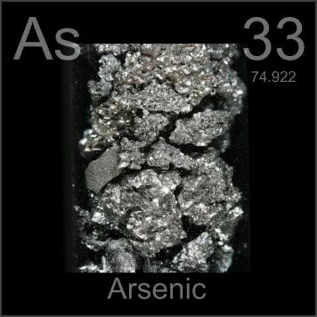

HOME
PREVIOUS
NEXT

Arsenic
Atomic Weight: 74.921595
Density: 5.727 g/cm3
Melting Point: 938.3 °C
Boiling Point: 614 °C[note]
Arsenic was the poison of choice until its detection became easy. Combined with gallium it forms a semiconductor used in creating high-speed integrated circuits for supercomputers and cell phones.